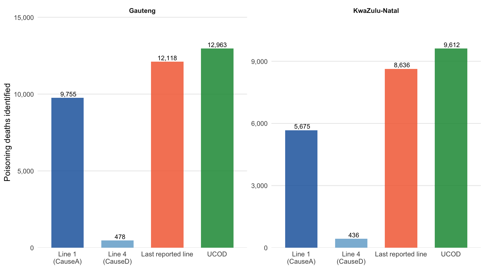
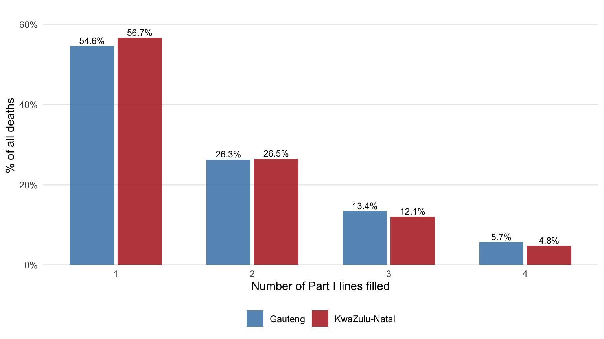
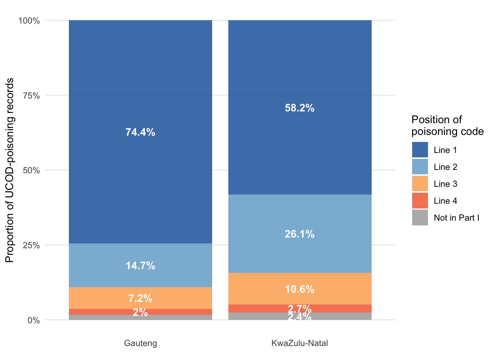
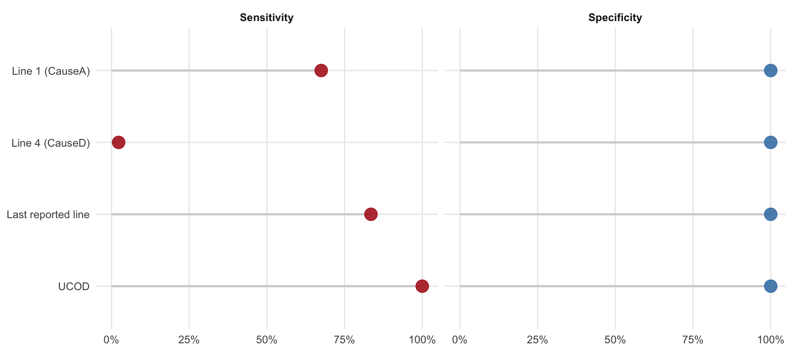
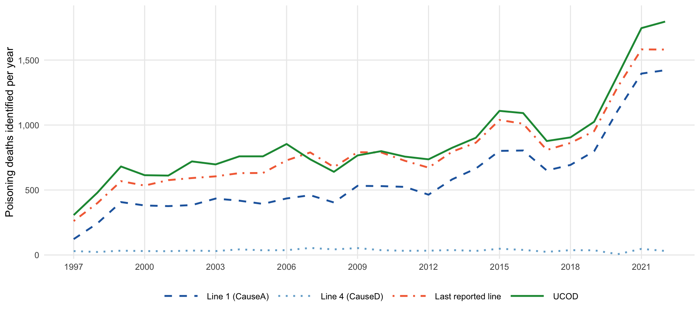

Option | Approach / field | GP (n) | KZN (n) | GP + KZN total | % of UCOD total | Sensitivity (%) | False positives | Specificity (%) | Consequence |
|---|---|---|---|---|---|---|---|---|---|
Option 1 | Line 1 (CauseA) | 9,755 | 5,675 | 15,430 | 68.3% | 67.5% | 188 | 100% | Undercounts: misses all deaths where the poisoning code is not the immediate cause |
Option 2 | Line 4 (CauseD) | 478 | 436 | 914 | 4% | 2.3% | 389 | 100% | Largely uninformative: most certifiers do not fill Line 4 |
Option 3 | Last reported line | 12,118 | 8,636 | 20,754 | 91.9% | 83.5% | 1,900 | 100% | Better than Line 1 but still misses intermediate-chain poisoning codes |
Option 4 | UCOD | 12,963 | 9,612 | 22,575 | 100% | 100% | 0 | 100% | Reference standard — captures all certificate information via ICD-10 selection rules |
Why the underlying cause of death matters: a poisoning case study
poisoning
UCOD
data-quality
vital-registration
icd10
methodology
Comparing four approaches to identifying poisoning deaths — Line 1, Line 4, last reported line, and UCOD — in Gauteng and KwaZulu-Natal vital registration data, 1997–2022
1 Background
The South African death notification form (DNF) records the sequence of conditions leading to death in Part I, which provides up to four lines (a–d):
| Position | Field | Meaning |
|---|---|---|
| Line 1 (1a) | CauseA |
Immediate cause — the final condition before death |
| Line 2 (1b) | CauseB |
Due to / antecedent cause of Line 1 |
| Line 3 (1c) | CauseC |
Due to / antecedent cause of Line 2 |
| Line 4 (1d) | CauseD |
Due to / most distal antecedent cause |
The underlying cause of death (UCOD) is derived by Stats SA by applying ICD-10 Volume 2 selection and modification rules to the complete certificate, starting from the lowest reported line and working back up the causal chain. This is the condition that initiated the train of morbid events, or the external circumstances of injury.
When a researcher wants to identify poisoning deaths from the LGH data, they face a practical choice: which field to search for the ICD-10 poisoning code? This case study uses 4,503,263 death records from Gauteng and KwaZulu-Natal, 1997–2022, to show the consequences of each option.
NotePoisoning definition applied in all options
| ICD-10 block | Category |
|---|---|
| X40–X49 | Accidental / unspecified |
| X60–X69 | Intentional self-poisoning |
| X85 | Assault by poisoning |
| Y10–Y19 | Poisoning, undetermined intent |
The same pattern is applied identically to every field.
2 The decision: which field to use?
There are four candidate approaches for identifying poisoning deaths in the raw LGH data. Here is what each one does and what it produces.
2.1 Option 1 — Line 1 only (CauseA)
Search CauseA (the immediate cause field) for a poisoning ICD-10 code.
When this would be right: The certifier has written the external cause (e.g. X49) directly on Line 1 as the immediate cause of death, with nothing below it.
When this fails: The certifier correctly records a terminal physiological event on Line 1 — e.g. cardiac arrest or hepatic failure — and writes the actual poisoning code on a lower line. This is the intended structure of a causal chain; it is not a certifier error. Line 1 scanning would silently drop the entire death from the poisoning count.
Also: Line 1 can carry a poisoning code that is not ultimately selected as the UCOD — for example when a certifier places an external cause on Line 1 but an underlying chronic disease sits below it. Those records become false positives.
2.2 Option 2 — Line 4 only (CauseD)
Search CauseD (the most distal / antecedent cause field) for a poisoning code.
When this would be right: The certifier has recorded the external cause at the bottom of a four-line chain.
When this fails: Most South African certifiers fill one or two lines and leave Line 4 blank. An approach anchored to CauseD will therefore find almost nothing — not because the deaths are absent but because the field is empty.
2.3 Option 3 — Last reported line
Identify the last non-empty line in the Part I chain for each certificate, then search that field.
When this would be right: The certifier uses the bottom-most filled line for the root cause, following the standard instruction to proceed from the immediate cause down to its origin.
When this fails: Some certifiers record an underlying chronic disease on the last line (e.g. diabetes mellitus on Line 3) while the poisoning code sits on an intermediate line (e.g. X48 — pesticides on Line 2). The last-line approach picks up the chronic disease, not the poisoning.
2.4 Option 4 — UCOD (UnderlyingCause) — the reference standard
Use the UnderlyingCause field, which contains the UCOD assigned by Stats SA after applying ICD-10 Volume 2 rules to the full certificate.
Why this is correct: The UCOD algorithm is specifically designed to resolve the ambiguities that defeat Options 1–3: it reads the entire certificate, handles terminal-event immediacy in Line 1, applies modification rules that can shift the assigned cause, and uses Part II (contributing conditions) where relevant.
Trade-off: The UCOD field is only populated in processed extracts. Raw DNF data or early extracts may not have it. However, for any analytic purpose — surveillance, trend analysis, burden estimation — UCOD is the appropriate and internationally mandated denominator.
3 Decision summary: Gauteng and KwaZulu-Natal poisoning deaths, 1997–2022
The table below shows exactly what each option produces when applied to the 4,503,263 GP + KZN death records. UCOD total (22,575 deaths) is the reference.

4 Why options 1–3 fall short: supporting evidence
4.1 How many Part I lines do certifiers actually fill?
If every certifier filled all four lines, Option 2 (Line 4) might recover most cases. The chart below shows the reality.

4.2 Where in the chain is the poisoning code recorded?
Among all UCOD-poisoning records, this shows which line the certifier used for the X/Y external cause code — and therefore which option can see it.

Code position (Part I) | Gauteng | KwaZulu-Natal | % Gauteng | % KwaZulu-Natal | Total |
|---|---|---|---|---|---|
Line 1 | 9,650 | 5,592 | 74.4 | 58.2 | 15,242 |
Line 2 | 1,902 | 2,508 | 14.7 | 26.1 | 4,410 |
Line 3 | 931 | 1,022 | 7.2 | 10.6 | 1,953 |
Line 4 | 264 | 258 | 2.0 | 2.7 | 522 |
Not in Part I | 216 | 232 | 1.7 | 2.4 | 448 |
4.3 Sensitivity and specificity against the UCOD reference
For each option, sensitivity = proportion of UCOD-poisoning deaths correctly captured; specificity = proportion of non-poisoning deaths correctly excluded.

Approach | True positive | False positive | False negative | Sensitivity (%) | Specificity (%) |
|---|---|---|---|---|---|
Line 1 (CauseA) | 15,242 | 188 | 7,333 | 67.5 | 100 |
Line 4 (CauseD) | 525 | 389 | 22,050 | 2.3 | 100 |
Last reported line | 18,854 | 1,900 | 3,721 | 83.5 | 100 |
UCOD | 22,575 | 0 | 0 | 100.0 | 100 |
ImportantWhat the numbers mean for a poisoning analyst
Of the 22,575 poisoning deaths (UCOD) in GP + KZN:
- Option 1 (Line 1) misses 32.5% (7,333 records) and also adds 188 false positives (1.2% of its identifications).
- Option 3 (last reported line) still misses 16.5% (3,721 records) — the cases where the poisoning code sits on an intermediate line.
- 448 UCOD-poisoning records (2%) carry no X/Y code anywhere in Part I — invisible to any line-scanning approach and only recoverable via the UCOD.
5 Illustrative examples
5.1 Type 1 — Missed by Option 1: poisoning buried in the chain
Line 1 carries a terminal physiological event; the poisoning code appears lower. Line 1 scanning misses the death entirely.
CauseA | CauseB | CauseC | CauseD | UnderlyingCause | province | year |
|---|---|---|---|---|---|---|
A099 | R58 | X49 | — | X49 | KwaZulu-Natal | 1,997 |
I50 | A41 | X49 | — | X49 | KwaZulu-Natal | 1,997 |
P23 | X49 | P54 | E142 | X49 | KwaZulu-Natal | 1,997 |
A099 | X49 | — | — | X49 | KwaZulu-Natal | 1,997 |
P78 | X49 | — | — | X49 | KwaZulu-Natal | 1,997 |
I46 | N17 | K72 | X49 | X49 | KwaZulu-Natal | 1,997 |
N17 | A35 | X49 | — | X49 | KwaZulu-Natal | 1,997 |
I46 | A41 | H05 | X49 | X49 | KwaZulu-Natal | 1,997 |
P29 | X49 | — | — | X49 | KwaZulu-Natal | 1,997 |
I46 | Y17 | — | — | Y17 | Gauteng | 1,997 |
R57 | C61 | K72 | X49 | X49 | Gauteng | 1,997 |
I46 | J18 | X49 | — | X49 | KwaZulu-Natal | 1,997 |
5.2 Type 2 — False positive for Option 1: poisoning code on Line 1 but UCOD differs
The certifier placed the external cause on Line 1; the ICD-10 selection rules selected a different condition as the true UCOD. Option 1 would count these as poisoning deaths in error.
CauseA | CauseB | CauseC | CauseD | UnderlyingCause | province | year |
|---|---|---|---|---|---|---|
X49 | E86 | D64 | Y53 | Y53 | Gauteng | 1,998 |
X49 | P74 | P78 | E40 | E40 | KwaZulu-Natal | 2,005 |
X49 | P78 | B59 | B33 | B33 | Gauteng | 2,005 |
X49 | B33 | G00 | — | B33 | KwaZulu-Natal | 2,005 |
X49 | B22 | — | — | B22 | Gauteng | 2,005 |
X49 | B33 | — | — | B33 | KwaZulu-Natal | 2,005 |
X61 | — | — | — | X59 | KwaZulu-Natal | 2,006 |
Y11 | N17 | E87 | B33 | B33 | Gauteng | 2,006 |
Y14 | B23 | — | — | B23 | Gauteng | 2,006 |
Y17 | Y26 | — | — | Y26 | KwaZulu-Natal | 2,006 |
5.3 Type 3 — Buried on Line 3: missed by Options 1 and 3
The poisoning code sits on Line 3 with a different condition below it. Option 3 (last reported line) picks up the non-poisoning Line 4 or the non-poisoning last line, not the poisoning on Line 3.
CauseA | CauseB | CauseC | CauseD | UnderlyingCause | province | year |
|---|---|---|---|---|---|---|
A099 | R58 | X49 | — | X49 | KwaZulu-Natal | 1,997 |
I50 | A41 | X49 | — | X49 | KwaZulu-Natal | 1,997 |
N17 | A35 | X49 | — | X49 | KwaZulu-Natal | 1,997 |
I46 | J18 | X49 | — | X49 | KwaZulu-Natal | 1,997 |
P29 | P36 | X49 | — | X49 | KwaZulu-Natal | 1,997 |
K72 | E40 | X49 | R16 | X49 | Gauteng | 1,997 |
E87 | J18 | X49 | — | X49 | Gauteng | 1,997 |
L51 | A41 | Y19 | — | Y19 | KwaZulu-Natal | 1,997 |
J81 | E142 | X49 | — | X49 | Gauteng | 1,997 |
A41 | E14 | X49 | — | X49 | KwaZulu-Natal | 1,997 |
6 Trend over time: what each option gives you year by year
The gap between the UCOD line (Option 4, solid green) and the other lines represents poisoning deaths that would be lost or added in error in every year of the study.

7 Recommendation
Use Option 4 — UCOD for any analysis of cause-specific mortality.
Options 1–3 produce systematically biased counts because they assume the cause of interest will appear at a predictable position in the Part I chain. South African certifiers do not write certificates in a standardised position order; the UCOD algorithm exists precisely to handle this variation.
Specific failure mechanisms:
- Option 1 loses all deaths where the certifier correctly records a terminal event (cardiac arrest, respiratory failure) on Line 1 and places the causal agent lower — the most common certificate structure for poisoning.
- Option 2 loses almost all poisoning deaths because the majority of certificates are single-line entries.
- Option 3 improves on Option 1 but fails on certificates with a chronic disease recorded below an intermediate-line poisoning code — the “buried” pattern shown in Type 3 above.
- All three options are also incomparable across years and settings because they are sensitive to certifier behaviour and coding conventions that shift over time; UCOD processing normalises this variation.